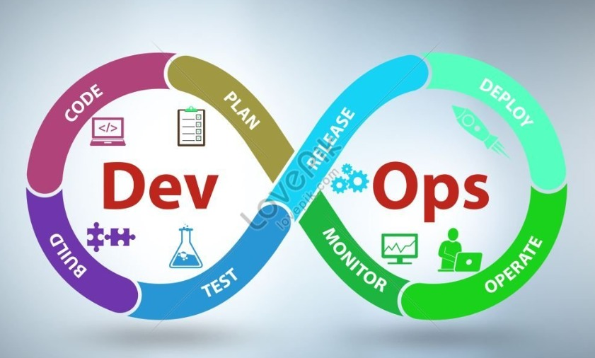
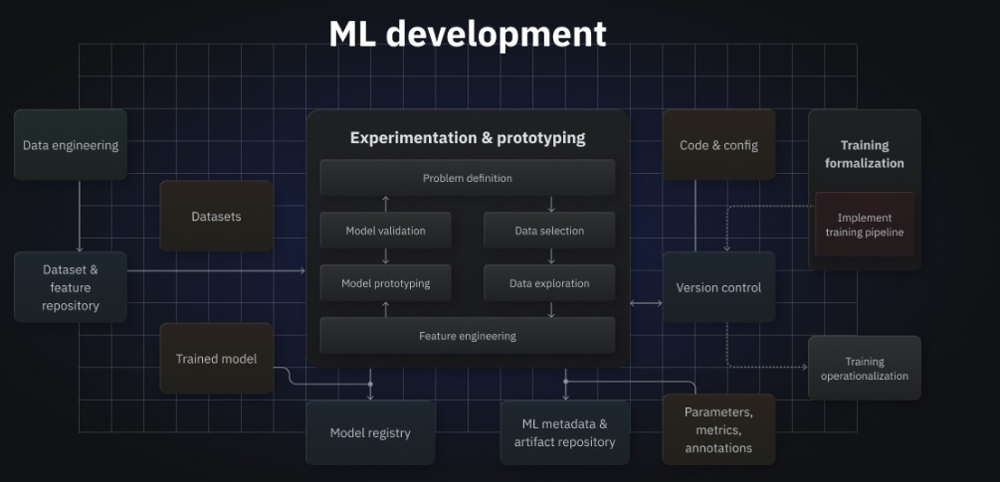
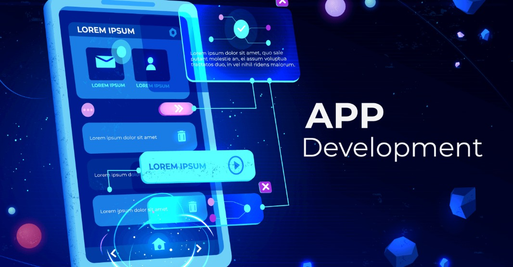
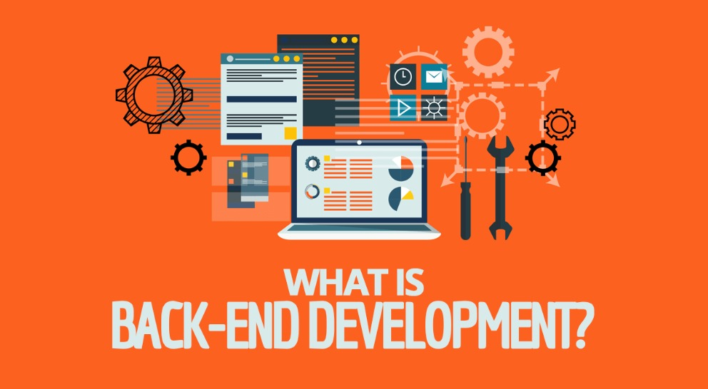
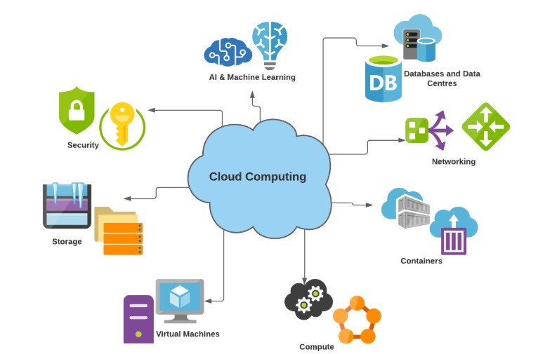

DEVOPS :
DevOps is a culture and practice that unifies development and operations to automate processes and deliver software faster. It improves collaboration, integrates continuous testing and deployment, and enhances overall efficiency. With DevOps, teams release reliable, high-quality software more frequently and smoothly.
CYBER SECURITYS
Cybersecurity protects computers, networks, and data from digital attacks by preventing unauthorized access, misuse, and damage. It uses tools and practices to detect threats, secure systems, and defend against hackers. Strong cybersecurity ensures privacy, safety, and smooth functioning of technology.
Web DT

Web DT

Web DT

Web DT
